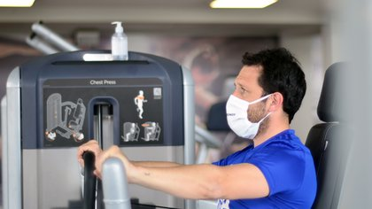

Donald Trump aseguró que “no es necesaria” la cuarentena en Nueva York pero existe la posibilidad de que imponga un aislamiento “de corto plazo”
El presidente de Estados Unidos, Donald Trump, sostuvo que la cuarentena 'no es necesaria' en Nueva York, Nueva Jersey y parte de Connecticut para atajar el contagio del nuevo coronavirus, tras consultar con los expertos y después de un fuerte rechazo de los líderes políticos locales y las advertencias del pánico que podría provocar.
Los Centros para el Control y la Prevención de Enfermedades (CDC), sin embargo, aconsejaron a los residentes de la región que no viajen, excepto para fines esenciales.
'Por recomendación de la Casa Blanca y tras consultar a los gobernadores de Nueva York, Nueva Jersey y Connecticut, pedí al Centro de Control y Prevención de Enfermedades (CDC) que emitiera una alerta de viaje, que será administrada por los gobernadores junto al Gobierno federal', escribió Trump a través de su cuenta de Twitter.
Luego, insistió en que 'la cuarentena no será necesaria' y afirmó.
Un bloqueo de ese tipo habría sido la medida más dura que el gobierno de los Estados Unidos haya tomado para frenar la propagación de la enfermedad.
Trump había indicado anteriormente que estaba respondiendo a las preocupaciones en otros estados, particularmente Florida, de que los viajeros del área metropolitana de Nueva York podrían propagar COVID-19 en sus comunidades.
El mandatario estadounidense dijo a los periodistas que los neoyorquinos 'muy infectados' eran una amenaza para Florida, un popular destino de vacaciones en el sur para las personas en el noreste.
Pero después de fuertes advertencias de los gobernadores de Nueva York, Andrew Cuomo, Nueva Jersey y Ned Lamont, de que la medida provocaría pánico y causaría más daños a los mercados financieros, Trump revirtió el rumbo y dijo que solo habría advertencias de viaje para la región.
El jefe de la Casa Blanca explicó que estaba estudiando la imposición de medidas de cuarentena en Nueva York, Nueva Jersey y parte de Connecticut para atajar el contagio del coronavirus.
'Estamos pensando en algunas cosas.Hay quien querría que hubiera cuarentena en Nueva York porque es un foco (...).Puede que no tengamos que hacerlo, pero existe la posibilidad de que hoy impongamos una cuarentena de corto plazo, de dos semanas, en Nueva York', señaló.
Habitaciones de hospital improvisadas en el Centro de Convenciones Jacob K. Javits, que se convertirá parcialmente en un hospital para pacientes afectados por el coronavirus, en Manhattan, ciudad de Nueva York, EEUU.
El estado de Nueva York ha reportado más de 53.000 casos del nuevo coronavirus.
Solo la ciudad de Nueva York reportó un aumento de más de 155 muertes el sábado, llevando el total de la ciudad a 672, aproximadamente un tercio de las 2.185 muertes en los Estados Unidos, según datos de la Universidad Johns Hopkins.
La vecina Nueva Jersey ha reportado más de 11.100 casos de COVID-19.
Según los últimos datos globales ofrecidas por la Universidad Johns Hopkins, el número de casos confirmados de Covid-19 en Estados Unidos han alcanzado los 122.666, mientras que los casos de fallecidos han superado los 2.000 y ya son 2.147 los muertos a causa de coronavirus en el país norteamericano.
MÁS SOBRE ESTOS TEMAS:
Posted On: 2020-03-29T00:00:00



Content Date: 2020-03-29
Download Date: 2021-04-21
Document ID: L0C04AKFW